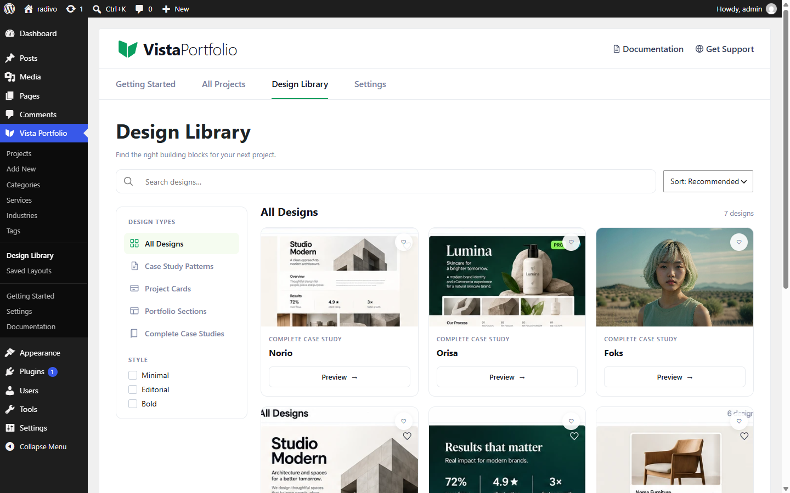
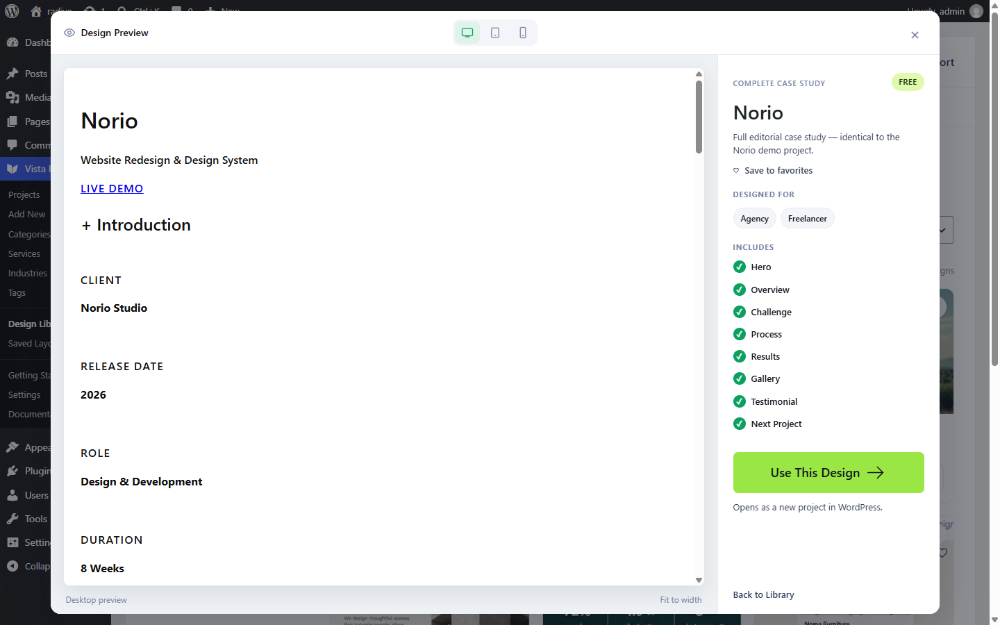

Design Library
Open Vista Portfolio → Design Library to browse Free starters.


What you get (Free)
- Complete case studies — full starters such as Norio, Orisa, and Foks.
- Patterns — Editorial Hero, Results & Metrics, Minimal Project Card, Selected Work Grid, and related section patterns.
Use Preview for a live iframe look, then Use This Design to create a project from that template. Favorites help you mark designs you return to often.